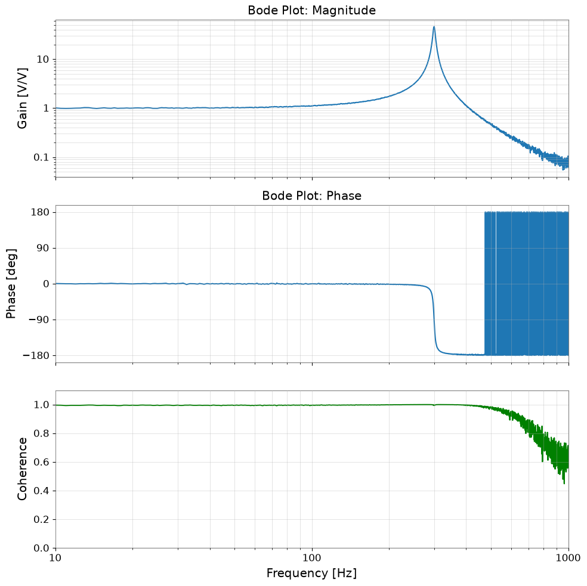
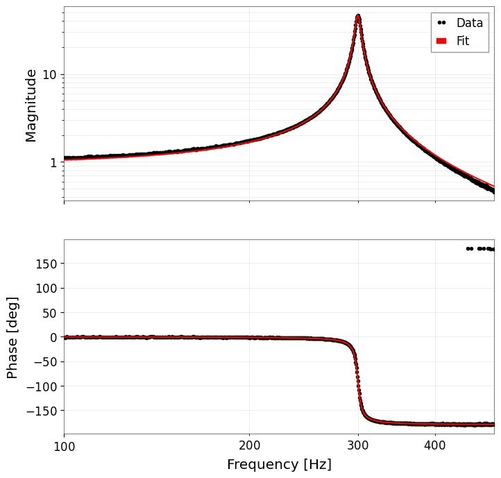

Note
このページは Jupyter Notebook から生成されました。 ノートブックをダウンロード (.ipynb)
[ ]:
# Install gwexpy with pinned versions of core dependencies for reproducibility on Colab
%pip install -q "gwexpy[all]" "gwpy<5.0.0" "numpy<2.0.0" "scipy<1.13.0" "astropy<7.0.0"
ケース導線:
正本ギャラリーに戻る: ケーススタディ一覧
関連リファレンス: リファレンス総合入口, API: 周波数系列, トピック別参照
前後の注目ワークフロー: ノイズバジェット解析, アクティブダンピング
チュートリアル: 伝達関数の測定

このチュートリアルでは、gwexpy を使用して測定データからシステムの伝達関数（Transfer Function）を推定し、 物理モデルへのフィッティングを行ってパラメータを同定する流れを解説します。
シナリオ: ある機械振動系（または電気回路）に白色雑音を入力し、その応答を測定しました。 この入出力データから、システムの共振周波数 \(f_0\) と Q値 \(Q\) を求めます。
ワークフロー:
データ生成: 入力信号（白色雑音）と、それに対するシステムの出力（共振系応答 + 測定ノイズ）をシミュレーションします。
伝達関数の推定: 入出力の時系列データから伝達関数とコヒーレンスを計算し、ボード線図（Bode Plot）を描画します。
モデルフィッティング: 推定した伝達関数に理論モデル（ローレンツ関数など）を当てはめ、パラメータを推定します。
[1]:
import warnings
warnings.filterwarnings("ignore", category=UserWarning)
warnings.filterwarnings("ignore", category=DeprecationWarning)
import matplotlib.pyplot as plt
import numpy as np
from scipy import signal
from gwexpy import TimeSeries
from gwexpy.plot import Plot
1. 実験データの生成（シミュレーション）
仮想的な実験を行います。
システム: 2次共振系（単振動）
共振周波数 \(f_0 = 300\) Hz
Q値 \(Q = 50\)
入力: 白色雑音（White Noise）
測定: サンプリング周波数 2048 Hz, 継続時間 60秒
出力信号には、測定に伴うノイズも付加します。
[2]:
# --- 設定: 共振周波数と Q を持つ 2 次系を用意し、測定からモード物理量を回収できるか確認します。 ---
fs = 2048.0 # サンプルレート [Hz]
duration = 60.0 # 記録長 [s]
f0_true = 300.0 # 真の共振周波数 [Hz]
Q_true = 50.0 # 真の Q 値
# --- 時間軸と入力信号: 広帯域入力でプラント全体を一度に励振し、共振を測定可能にします。 ---
t = np.linspace(0, duration, int(duration * fs), endpoint=False)
input_data = np.random.normal(0, 1, size=len(t)) # 白色に近い励振で特定周波数だけに偏らず応答を測ります。
# --- 物理系シミュレーション: 懸架系やアクチュエータに現れる 1 本の機械共振を模擬します。 ---
# H(s) の f0 はモード周波数、Q は減衰の弱さを表すので、後でこの 2 つを回収できるかが測定の要点です。
w0 = 2 * np.pi * f0_true
num = [w0**2]
den = [1, w0 / Q_true, w0**2]
system = signal.TransferFunction(num, den)
# 有限長の広帯域励振に対する応答を作り、実測と同じ条件で伝達関数推定を行います。
_, output_clean, _ = signal.lsim(system, U=input_data, T=t)
# --- 計測雑音を加える: コヒーレンスで「どこまで測定を信じてよいか」を判定できるようにします。 ---
# ここではセンサ読み出し雑音を仮定し、応答が小さい帯域ほど推定が不安定になる状況を再現します。
measurement_noise = np.random.normal(0, 0.1, size=len(t))
output_data = output_clean + measurement_noise
# --- gwexpy TimeSeries に包んで、実測チャンネルと同じ API で解析できる形にします。 ---
ts_input = TimeSeries(input_data, t0=0, sample_rate=fs, name="Input", unit="V")
ts_output = TimeSeries(output_data, t0=0, sample_rate=fs, name="Output", unit="V")
print("Input data shape:", ts_input.shape)
print("Output data shape:", ts_output.shape)
Plot(ts_input, ts_output, separate=True);
Input data shape: (122880,)
Output data shape: (122880,)

2. 伝達関数の推定
入出力の時系列データ ts_input と ts_output から、周波数応答関数（伝達関数）を推定します。 gwexpy の transfer_function メソッドを使用します。
また、測定の信頼性を確認するためにコヒーレンス（Coherence）も計算します。 コヒーレンスが 1 に近い周波数帯域は、入出力の関係が線形であり、ノイズの影響が少ないことを示します。
[3]:
# FFT 長は 2 秒平均とし、ランダム雑音を抑えつつ 300 Hz 付近の共振を十分に分解します。
fftlength = 2.0 # 2 秒ごとに FFT して平均
# Output/Input からプラント応答を求め、どの周波数でどれだけ増幅・位相回転するかを見ます。
tf = ts_input.transfer_function(ts_output, fftlength=fftlength)
# コヒーレンスは信頼度指標で、低い帯域では雑音優勢のため TF を鵜呑みにしないようにします。
coh = ts_input.coherence(ts_output, fftlength=fftlength) ** 0.5
# --- ボード線図とコヒーレンスを並べ、物理的な応答と推定の信頼性を同時に確認します。 ---
fig, axes = plt.subplots(3, 1, figsize=(10, 10), sharex=True)
# 振幅
ax = axes[0]
ax.loglog(tf.abs(), label="Measured TF")
ax.set_ylabel("Gain [V/V]")
ax.set_title("Bode Plot: Magnitude")
ax.grid(True, which="both", alpha=0.5)
# 位相
ax = axes[1]
ax.plot(tf.degree(), label="Measured Phase")
ax.set_ylabel("Phase [deg]")
ax.set_title("Bode Plot: Phase")
ax.set_yticks(np.arange(-180, 181, 90))
ax.grid(True, which="both", alpha=0.5)
# コヒーレンス
ax = axes[2]
ax.plot(coh, color="green", label="Coherence")
ax.set_ylabel("Coherence")
ax.set_xlabel("Frequency [Hz]")
ax.set_ylim(0, 1.1)
ax.set_xlim(10, 1000)
ax.grid(True, which="both", alpha=0.5)
plt.tight_layout()
plt.show()

3. モデルフィッティング
得られた伝達関数（特に共振付近）に対して、理論モデルをフィッティングします。 ここでは、単振動の伝達関数モデルを定義し、最小二乗法でパラメータ（\(A, f_0, Q\)）を求めます。
モデル式（ゲイン \(A\) を含む）:
[4]:
# --- フィット用モデル: パラメータがそのままモード物理量に対応する共振器モデルを定義します。 ---
def resonator_model(f, amp, f0, Q):
# f: 測定した周波数軸 [Hz]。
# amp は計測系のゲイン、f0 は共振周波数、Q はどれだけ鋭い共振かを決める減衰指標です。
# 振幅だけでなく位相回転も使うため、複素応答のままモデル化します。
numerator = amp * (f0**2)
denominator = (f0**2) - (f**2) + 1j * (f * f0 / Q)
return numerator / denominator
# --- フィット実行: 共振が支配的な帯域だけに絞ってモード物理量を推定します。 ---
# 全帯域を 1 本の 2 次モデルで説明しようとすると、共振外の構造に引っ張られて推定が崩れるため、
# 100-500 Hz の共振支配帯域だけを切り出します。
tf_crop = tf.crop(100, 500)
# 初期値は観測されたピーク近傍に置き、物理的な共振から外れた局所解を避けます。
# ここでは見えているピークが 300 Hz 付近なので、その近傍を初期値にします。
p0 = {"amp": 1.0, "f0": 300.0, "Q": 10.0}
# 複素伝達関数をこの帯域でフィットします。
# FrequencySeries.fit() は実部・虚部を同時に使うので、減衰推定に必要な位相情報を失いません。
result = tf_crop.fit(resonator_model, p0=p0)
print(result)
┌─────────────────────────────────────────────────────────────────────────┐
│ Migrad │
├──────────────────────────────────┬──────────────────────────────────────┤
│ FCN = 6.175 (χ²/ndof = 0.0) │ Nfcn = 118 │
│ EDM = 4.72e-06 (Goal: 0.0002) │ │
├──────────────────────────────────┼──────────────────────────────────────┤
│ Valid Minimum │ Below EDM threshold (goal x 10) │
├──────────────────────────────────┼──────────────────────────────────────┤
│ No parameters at limit │ Below call limit │
├──────────────────────────────────┼──────────────────────────────────────┤
│ Hesse ok │ Covariance accurate │
└──────────────────────────────────┴──────────────────────────────────────┘
┌───┬──────┬───────────┬───────────┬────────────┬────────────┬─────────┬─────────┬───────┐
│ │ Name │ Value │ Hesse Err │ Minos Err- │ Minos Err+ │ Limit- │ Limit+ │ Fixed │
├───┼──────┼───────────┼───────────┼────────────┼────────────┼─────────┼─────────┼───────┤
│ 0 │ amp │ 0.934 │ 0.007 │ │ │ │ │ │
│ 1 │ f0 │ 299.994 │ 0.021 │ │ │ │ │ │
│ 2 │ Q │ 49.6 │ 0.5 │ │ │ │ │ │
└───┴──────┴───────────┴───────────┴────────────┴────────────┴─────────┴─────────┴───────┘
┌─────┬────────────────────────────┐
│ │ amp f0 Q │
├─────┼────────────────────────────┤
│ amp │ 4.33e-05 0 -2.30e-3 │
│ f0 │ 0 0.000447 -0.1e-3 │
│ Q │ -2.30e-3 -0.1e-3 0.243 │
└─────┴────────────────────────────┘
4. 結果の確認
フィッティング結果を数値で確認し、測定データに重ねてプロットします。 FitResult.plot() メソッドは、複素数データの場合、自動的にボード線図（振幅・位相）を描画します。
[5]:
# --- 推定結果を真値と比較し、測定からモード物理量を回収できたか確認します。 ---
print("--- Estimated Parameters ---")
print(f"Resonance Frequency (f0): {result.params['f0']:.4f} Hz (True: {f0_true})")
print(f"Quality Factor (Q): {result.params['Q']:.4f} (True: {Q_true})")
print(f"Gain (Amp): {result.params['amp']:.4f}")
# --- フィット結果を描き、ピーク高さと位相回転の両方を再現できているか確認します。 ---
# 複素応答なので result.plot() は振幅と位相の 2 軸を返し、両方が一致して初めてモデルが妥当と言えます。
axes = result.plot()
plt.show()
--- Estimated Parameters ---
Resonance Frequency (f0): 299.9943 Hz (True: 300.0)
Quality Factor (Q): 49.6456 (True: 50.0)
Gain (Amp): 0.9340
